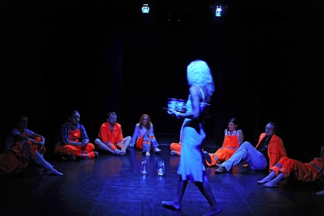

copyright by Jan Lubicz Przyluski - All Rights Reserved

Jan Lubicz Przyłuski
SZKICE DO DADA-OPERY - (w ramach progamu: 291. Dynamics of Chaos)
Zamiast opisu projektu dokonałem wyboru i tłumaczenia poniższego tekstu. Był rok 1920, Tzara przyjeżdza do Paryża. Dada wkracza w nową, zasadniczą fazę. W reaktywowanym piśmie “Litterature” Andre Breton pisze do przyjaciela te słowa:
Andre Breton
Porzuć wszystko
Już dwa miesiące mieszkam na Placu Blanche. Zimy są tu lekkie, a kobiety chodzące po chodniku przed kawiarnią sprzedającej używki tworzą widoki pełne uroku i ruchu. Noc zdaje się istnieć nie bardziej niż w krainach z hiperborejskich legend. Nie przypominam sobie mieszkanie gdzieś indziej. Ci co twierdzą, że mnie znają, muszą się mylić. Niektórzy rozpowiadają nawet, jakobym nie żył. To dobrze, bo w ten sposób przywołują mnie do porządku. W końcu to kto tutaj mówi? Andre Breton, człowiek przeciętnej odwagi, który zadowala się wykonaniem kilku mało znaczących czynów, tylko dlatego że któregoś dnia może poczuć się zbyt sztywnym i niezdolnym do zrobienia tego, czego naprawdę pragnie. Taka jest prawda. Wiem, że kilkakrotnie próbowałem już się zmienić. Prawdą jest też, że nie jestem nawet mniechem, nawet nie podróżnikiem. A jednak ciągle nie załamuję się, staje na nogi o świcie roku 1922, aby na ten cudny festiwal na Montmartrze zrobić coś co pozwoli mi marzyć, że jeszcze stanę się kimś. (...)
Dadaizm był dla niektórych ludzi niczym więcej niż powodem do tego, żeby sobie przysiąść na chwilę. Nie powiedziałem tego na wstępie, ale nie ma tu mowy o jakichkolwiek ideach absolutnych. Działają na nas mentalne siły naśladowania, które zabraniają nam pójścia w głąb, i które sprawiają, że o rzeczach kiedyś bliskich myślimy teraz surowo. Poświęcenie życia jakiejś idei, czy to Dada czy czemukolwiek innemu, jest tylko dowodem intelektualnego ubóstwa. Idee nie są ani dobre ani złe. Po prostu są takie, jakie są. Takie same, bez względu na to czy mnie kręcą czy nie, są wartościowsze kiedy rozbudzają mnie w tym czy innym kierunku. Wybaczcie mi jeśli będę musiał stwierdzić – przeciwnie niż bluszcz – że kiedy się przywiązuję, umieram. Czy powinienem się martwić tym, że moje słowa uderzają w kult przyjaźni, o której Pan Biner-Valmer twierdzi, że prowadzi wprost do kultu patriotyzmu?
Mogę tylko powiedzieć, że mam to gdzieś. I jeszcze raz powtarzam:
Porzuć wszystko.
Porzuć Dada.
Porzuć żone, zostaw kochankę.
Porzuć nadzieje i obawy.
Zostaw swoje dzieci gdzieś na pustkowiu.
Porzuć substancję z której tworzy się cień.
Zostaw za sobą, jeśli trzeba, wygodne życie i obiecująca przyszłość.
Wjedź na autostradę.
(przeł. Jan Lubicz Przyłuski)
Artist's statement
Dadaoizm
Nie myślę o tym jako o projekcie. To ma być realizacja, w jednej chwili, powinno dziać się i stawać. W przestrzeni w której siedzieć będzie widownia wszędzie między rozstawionymi krzesłami, bez układu i podziału, będzie odbywał sie ruch performera, tancerza, który jakby cielesność swoja zostawiał na drugim planie, aby poruszać wyłącznie energią oddechu i wibracją napięć w strukturze swojego ciała. To właśnie ta struktura, w Europie opisana znakiem świętej geometrii i rozpracowana przez Labana, na Wschodzie przyjęła formy bardziej bezpośrednie, między tańcem (jak formy taichi i formy gongfu) a bioenergioterapią. Butoh jeszcze inaczej wdziera się w tą przestrzeń i przeszywa ją. Jeśli tamto było surrealizmem ciała, to będzie cofnięciem się o krok, nawróceniem się na Dada, do zupełnej anarchii, tej z Artauda. Niech żyje chaos i ekstaza komunikacji!
Tak więc to coś, ta forma prezentacji czy performasu, będzie najpierw wizualnym traktatem, potem zaś osobistą eksplozją. Eksplozją hermetyczną. Tymczasem performerem w projekcie będę ja, ale i to może się zmienić.
password: dada
14. Leave Everything
(dadaoism - Szkice do Dada-opery)
2016
Berlin-Warszaw
reżyseria: Jan Lubicz Przyłuski
performerzy: Martina Jansen, Aleks Slota, Jagna Anderson, Katarzyna Jaśkiewicz, Iwona Wojnicka, Małgorzata Gajdemska, Martyna Miller, Dorota Porowska, Momo Sano, Jan Lubicz Przyłuski
muzyka: Michał Talma-Sutt
produkcja: Format Zero